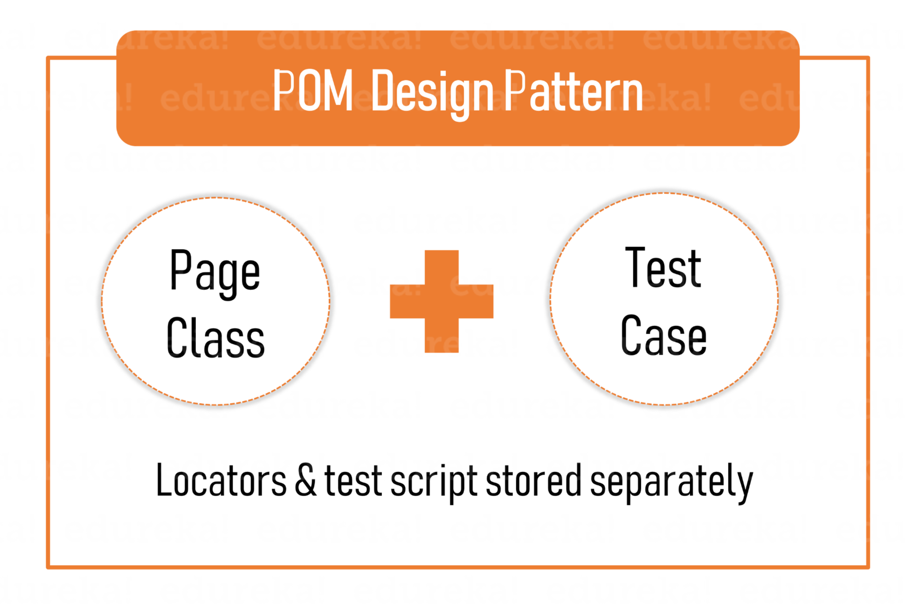
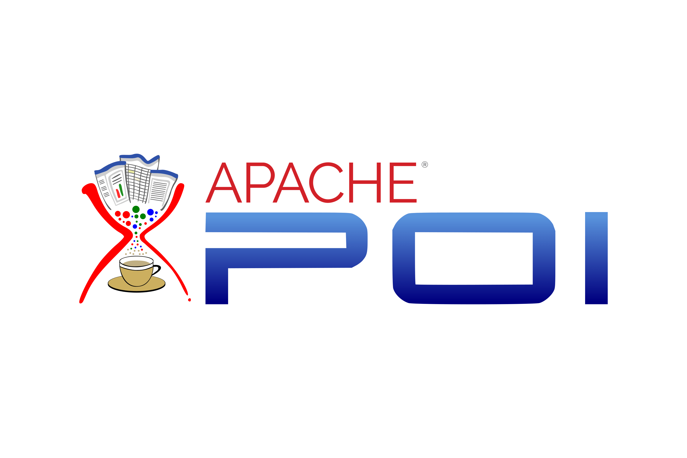
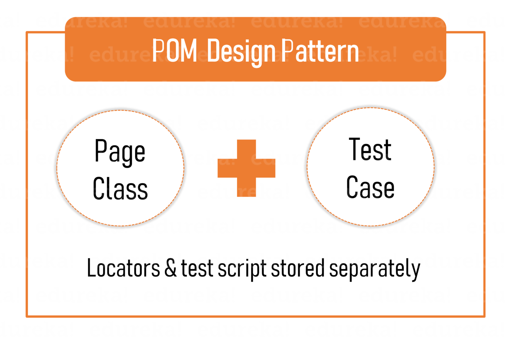
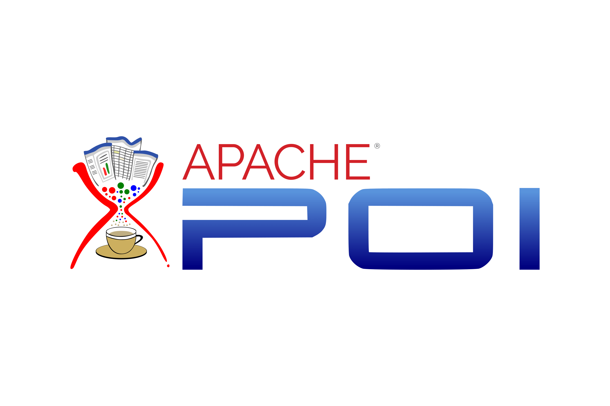
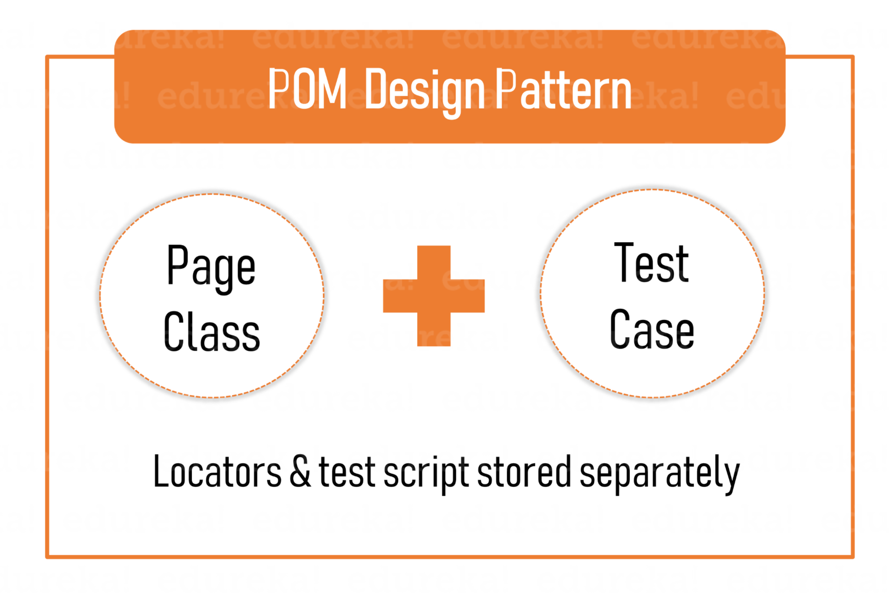
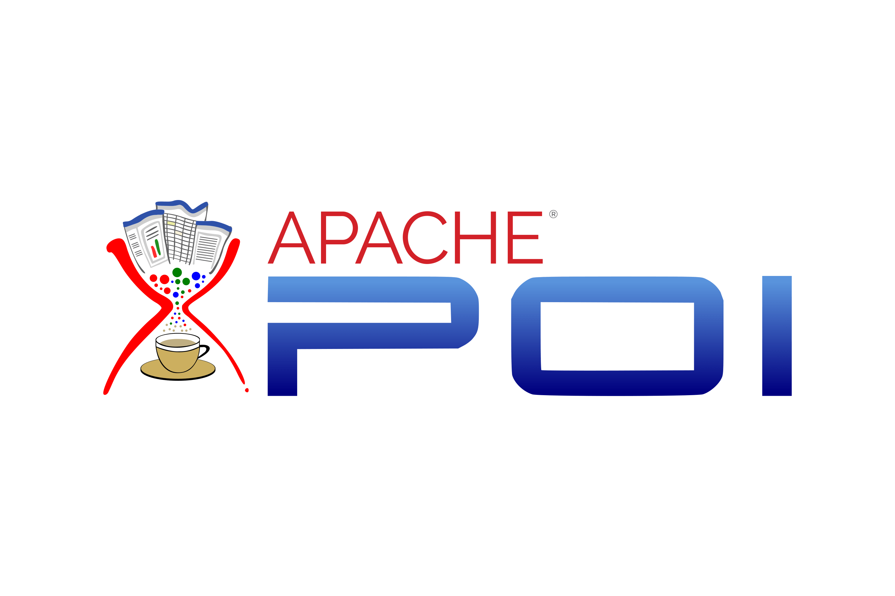

Hard-Skills


 





Automation Testing | Web Development(fe)
A dedicated BCA student with a passion for technology, specializing in automation testing and web development. Proficient in various programming languages and methodologies, they possess solid foundations in computer applications. With expertise in automation testing tools and methodologies like Selenium, TestNG, Page-object-model, Data-driven-testing e.t.c. , they streamline processes and ensure software quality. Their proficiency extends to web development, mastering HTML, CSS, JavaScript. Eager to contribute meaningfully to the software industry, they seek opportunities to apply their skills, enthusiasm, and commitment to excellence, aiming to excel and grow in their career journey.

